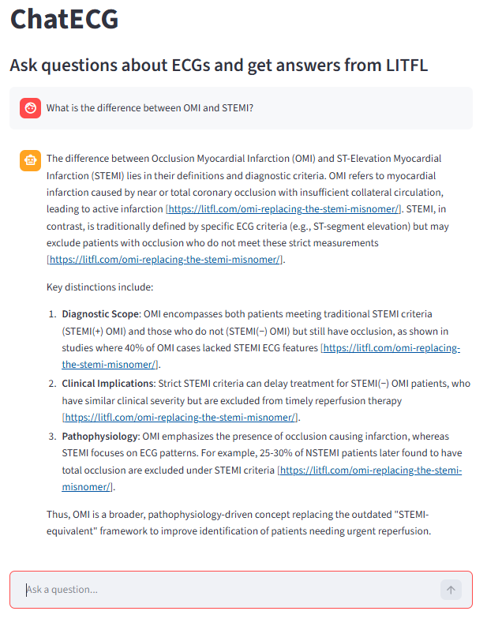
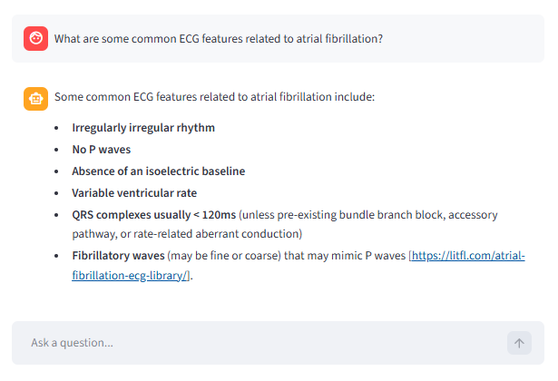

Chat-ECG is a web app deployed on Streamlit Community Cloud. It was designed using a retrieval-augmented generation (RAG) pipeline to ensure the LLM produced clinically grounded responses. The application allows users to ask questions about electrocardiograms with information sourced from the website Life in the Fastline (https://litfl.com/ecg-library/).


ECG-related webpages from Life in the Fastlane were converted into markdown files and stored in a Chroma vector database using Cohere's embed-english-v3.0 embedding model. When a user submits a query, the system retrieves the top 20 most relevant documents from the vector database and then reranks the retrieved documents and selects the top 5 most relevant documents using Cohere's rerank-english-v3.0 reranking model. This context is passed into the LLM to generate a response to the user's query.
The LLM used to generate responses is Qwen3-32B via Groq. The system prompt given to the model is provided below:
You are an expert cardiologist assistant. Carefully read the following context and answer the user's question.
Instructions:
1. Base your answer **only on the provided context**.
2. Include **inline citations for any statements** exactly as URLs in the context, e.g., [https://example.com/article]. Do not include a references section, only inline URLs.
3. If the answer is not in the context, reply: "I could not find the answer in my database."
The user interface was designed using Streamlit's chat message interface. The python code was committed to a GitHub repository and then deployed from GitHub to Streamlit Community Cloud.